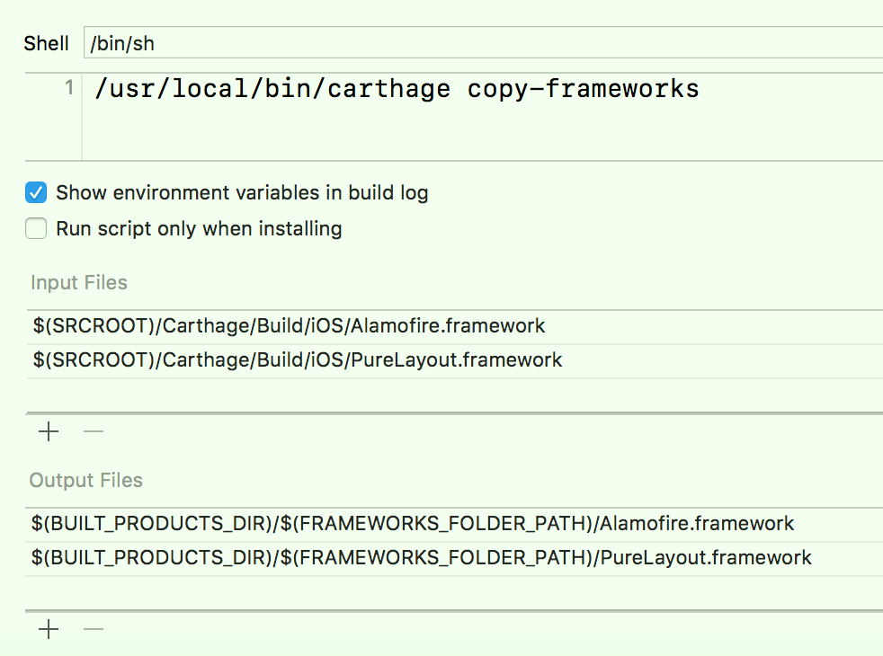

一、概述、安装
-
1、Carthage类似于CocoaPods，用于iOS、macOS平台的第三方框架的管理；其原理为将源代码编译成Dynamic framework（Xcode 6.0开始支持）；
- Carthage是基于Swift的，而Swift只支持Dynamic framework；从Xcode 9开始，Swift 4.0支持静态库，故Carthage也开始支持静态库；
- 之后手动拖入到项目中；其对项目工程文件的入侵性较小，并且可以与CocoaPods无缝集成，一个项目可以同时拥有CocosPods和Carthage；
-
2、可以通过Homebrew进行安装Carthage；
# 安装carthage（安装升级carthage，注意可能出现多版本共存bug） brew install carthage carthage version # 查看安装的版本
二、使用步骤
-
1、在项目根目录更加一个名称为
Cartfile的文件，其作用和Podfile一样，描述所需要的第三方框架；touch Cartfile open -a Xcode Cartfile # 使用Xcode打开编辑 # Cartfile内容（可以像Podfile一样指定库的版本） github "Alamofire/Alamofire" == 4.7.0 github "PureLayout/PureLayout" -
2、执行更新命令，生成
.framework文件；carthage update carthage update --platform iOS # 只生成iOS平台的framework-
执行完成后，会自动将第三方库clone到
Carthage/Checkouts文件夹下，然后会自动打包成相应的.framework文件，打包完的文件会保存在Carthage/Build文件夹下； -
Carfile.resolved：用于版本控制；
-
-
3、添加Dynamic framework到项目中；
-
1）方式一：Embedded Binaries（不建议使用）
- a. 由于是生成的是Dynamic framework，可以手动直接添加.framework，到General或Build Phase界面的“Embedded Binaries”中，之后就可以直接使用；
- b. 添加到“Embedded Binaries”后，“Link Binary With Libraries”中会自动添加，上面手动添加的.framework；
- c. 若只是仅仅手动添加.framework到“Link Binary With Libraries”，则该.framework只能是Static Framework，不可以为Dynamic framework；
- d. 若手动拖拽.framework到工程中，则只会添加.framework到“Link Binary With Libraries”中；
-
2）方式二：Link Binary With Libraries + Run Script
-
a. 添加.framework到“Link Binary With Libraries”后；在Build Phase界面，点击左上角+按钮，添加一个Run Script，并做以下配置；

-
a) 添加命令：
usr/local/bin/carthage copy-frameworks -
b)
Input Files中添加每一个framework的输入路径（注意避免空格换行符），比如：$(SRCROOT)/Carthage/Build/iOS/Alamofire.framework $(SRCROOT)/Carthage/Build/iOS/PureLayout.framework -
c)（可选；建议配置）
Output Files中添加每一个framework的输出路径，比如：$(BUILT_PRODUCTS_DIR)/$(FRAMEWORKS_FOLDER_PATH)/Alamofire.framework $(BUILT_PRODUCTS_DIR)/$(FRAMEWORKS_FOLDER_PATH)/PureLayout.framework
-
-
b.
carthage copy-frameworks命令的作用：- a) 拷贝Dynamic framework，进而不需要在手动添加到“Embedded Binaries”；
- b)（最重要）裁减Dynamic framework；
- Carthage生成的Dynamic framework是包含模拟器和真机平台的，而App Store提交的包内，不可以有不需要的平台的代码（模拟器的），使用该脚本就是自动将无用代码去除；（
http://ikennd.ac/blog/2015/02/stripping-unwanted-architectures-from-dynamic-libraries-in-xcode/） - 添加
Output Files路径后，编译速度会加快；只有在Input Files中的文件更改了，或Output Files中的文件丢失的情况下，才会执行命令，否则每次运行都会去执行； With output files specified alongside the input files, Xcode only needs to run the script when the input files have changed or the output files are missing. This means dirty builds will be faster when you haven't rebuilt frameworks with Carthage.- 参考：
https://github.com/Carthage/Carthage/tree/baa4f23db422bcec17c278c8e62df17c747bb289
- Carthage生成的Dynamic framework是包含模拟器和真机平台的，而App Store提交的包内，不可以有不需要的平台的代码（模拟器的），使用该脚本就是自动将无用代码去除；（
-
-
三、自己的类库支持Carthage
-
1、步骤：
-
1）新建一个Framework（动态库、静态库均可)的Project或Target，并进行配置；
- 使用分类，
Other Linker Flags中加-all_load； - 使用bitcode，
Other C Flags中加-fembed-bitcode； Produce Module Name、Produce Name配置framework的名称；
- 使用分类，
-
2）配置
Manage Schemes，将Framework Target的Shared选项选中（就这一步，就支持Carthage）；- Carthage在build时，会自动将设置为Shared的framework target构建成framework；
-
3）构建.framework，并拖拽到项目中测试使用；
-
cd到工程目录下，执行以下命令，其会自动在工程的Carthage/Build目录下，创建.framework；
# build：只是构建 # update：拉取代码，并构建 carthage build --no-skip-current
-
-
-
2、参考：
- 【iOS 开发】给自己项目添加 Carthage 支持的方法：
https://www.jianshu.com/p/8ccb26206730
- 【iOS 开发】给自己项目添加 Carthage 支持的方法：
四、其他说明
-
1、若更新了Cartfile文件（库的版本、增删库），则只需要重新执行
carthage update命令即可； -
2、Carthage也支持XCFramework（Xcode 11开始支持，用于替代
.framework），此时生成.xcframework文件后，拖入到项目中即可，不需要配置Run Script（carthage copy-frameworks，裁减Dynamic framework）了；carthage update --use-xcframeworks- 参考：
https://github.com/Carthage/Carthage#quick-start
- 参考：